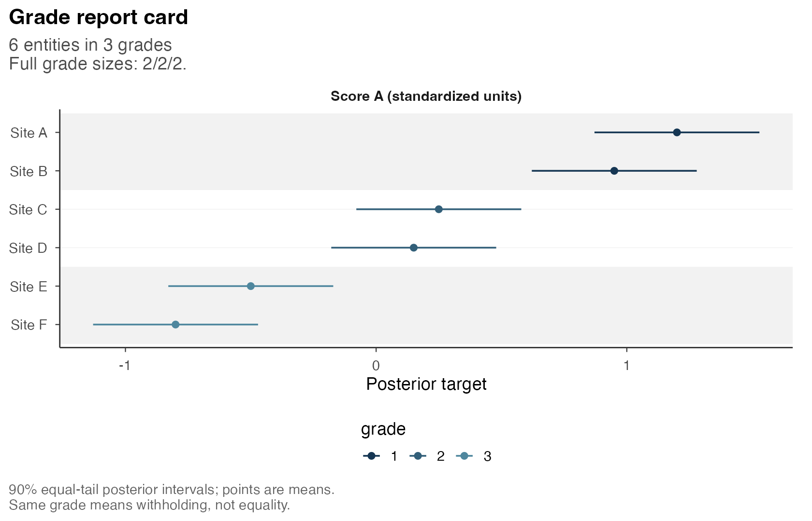
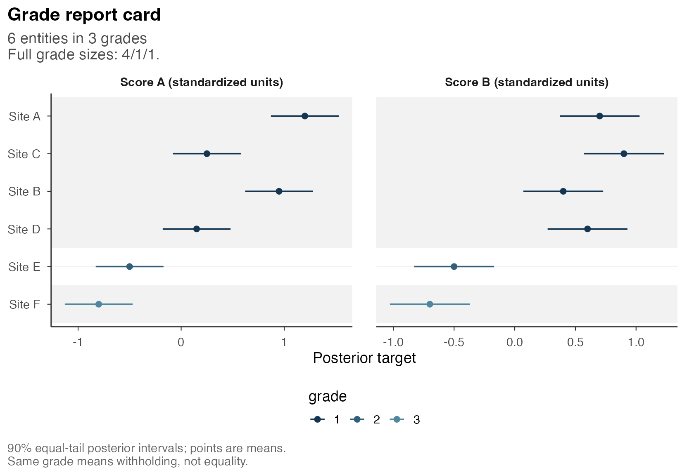

Getting started: grading with one or two criteria
Source:vignettes/a1-getting-started.Rmd
a1-getting-started.RmdThis article grades six sites whose scores are uncertain. A full
ranking puts every pair of sites in order, even when the data leave
their order uncertain. postrank() can instead place two
sites in the same integer grade, which leaves that pair unordered. The
chosen grading balances two posterior expected costs: reporting a pair
in the wrong order, and leaving a pair unordered.
We first grade the sites on one criterion (one score), then add a second criterion so all six sites receive one common grading across both scores. Grade 1 is the highest priority. Sites in different grades are reported in that order. Sites in the same grade are left unordered; this does not mean that their scores are equal.
The example sites
The example has six fictional sites, A through
F. Each site’s score has a normal posterior distribution
with standard deviation 0.2, in illustrative standardized
units. Sites are independent, and so are the two scores within each
site. Larger score values mean higher priority on both criteria. These
distributions are synthetic and were created for teaching rather than
fitted to observations from real sites.
sites$one holds the first criterion
(score_A), and sites$two holds both criteria
(score_A and score_B, with the same
distribution for score_A). For any two sites, the pairwise
comparison probability is the posterior probability that one site’s
score exceeds the other’s. Because the tutorial distributions are
normal, those comparison probabilities and the marginal posterior
intervals follow analytically from the means and standard deviations,
and pr_tutorial stores them directly. When you analyze
output from your own model (such as Stan, brms, or JAGS), you first
build an input describing each criterion, its priority direction, and
how the draws were generated; see Preparing your posterior draws and
comparison probabilities.
knitr::kable(data.frame(Site = sites$units$label, sites$law$means),
row.names = FALSE, digits = 2,
col.names = c("Site", "Score A mean", "Score B mean"))| Site | Score A mean | Score B mean |
|---|---|---|
| Site A | 1.20 | 0.7 |
| Site B | 0.95 | 0.4 |
| Site C | 0.25 | 0.9 |
| Site D | 0.15 | 0.6 |
| Site E | -0.50 | -0.5 |
| Site F | -0.80 | -0.7 |
Choosing tau and G_max on one
criterion
Two policy settings shape a one-criterion grading:
-
G_max = 3allows at most three distinct grades (fewer grades are also allowed if they give lower loss). -
tau = 0.2is the cost of leaving a pair unordered, relative to cost1for reporting a pair in the wrong order (0 < tau <= 0.5).
The loss is the posterior expected cost averaged over all
M unordered pairs of sites. Considered one pair at a time,
ordering a pair has lower expected cost than leaving it unordered only
when its more likely direction has posterior probability above
1 - tau (here 0.8). Because integer grades
must be transitive across all pairs and G_max caps the
number of grades, the optimal grading can differ from that pair-by-pair
rule. Smaller values of tau make unordered pairs cheaper
and tend to order fewer pairs. With one criterion, weights
defaults to 1.
Computing a grading requires an optimization solver: Gurobi is the
default and requires a Gurobi license, or you can install the
open-source HiGHS solver with install.packages("highs") and
pass backend = "highs". The chunk below shows the solver
call without running it (eval = FALSE), and the next chunk
loads the stored result from an equivalent call with
postrank_example():
one <- postrank(sites$one, tau = 0.2, G_max = 3, backend = "highs",
control = postrank_control(time_limit = 60, threads = 1, seed = 1304))
one <- postrank_example("tutorial_one")
one
#> <postrank_analysis> 6 entities in 3 grades (sizes 2 / 2 / 2)
#> One criterion: score_A.
#> Posterior loss: 0.0417.
#> Disclosed 12 of 15 pairs (80.0%); withheld 3.
#> Expected error among disclosed pairs: score_A 0.002.
#> Solver: Optimal within solver tolerances.
#> Optimization gap: 0; requested absolute gap 1e-08.
#> Prepared: report card.
#> Grade 1 has highest priority; a shared grade withholds the comparison.
#> grade 1 (2): A, B
#> grade 2 (2): C, D
#> grade 3 (2): E, F
#> ! 1 warning recorded: Reported lower bound exceeded the validated action ris...
#> i summary(x) explains the loss, settings and bounds; get_grades(x) returns
#> all grades.In the printed output, “disclosed” pairs are the ordered pairs,
“withheld” pairs are the unordered pairs, and “risk” is the posterior
expected loss. The solver also reports a lower bound (a loss no valid
grading can beat) and a gap (the returned grading’s loss minus that
lower bound). Here the warning notes that floating-point solver
tolerances placed the raw lower bound slightly above the checked
grading’s loss (“validated action risk”, where “action” means the
grading), so postrank clamped the bound to the loss and
recorded gap 0; see Computing grades, choosing settings, and
reading solver bounds for details. The report card was prepared;
Monte Carlo fragility was not, because sites$one supplies
analytic normal distributions rather than posterior draws.
The grading uses 3 grades and orders 12 of
the 15 site pairs (80.0%), leaving
3 pairs unordered. Sites A and B
are in grade 1, C and D in grade 2, and
E and F in grade 3. Because A is
in grade 1 and C is in grade 2, the report places
A above C. Because A and
B share grade 1, that pair is left unordered; listing
A before B within grade 1 carries no
order.
We can read the error counts and recompute the loss directly from the exported accessors:
p <- get_profile(one)
rel <- get_relations(one)
M <- sum(upper.tri(rel))
N <- sum(rel[upper.tri(rel)] != 0L)
p[, c("criterion", "E", "E_over_N", "risk")]
#> criterion E E_over_N risk
#> 1 score_A 0.0247746 0.00206455 0.04165164
c(recomputed = (p$E + one$settings$tau * (M - N)) / M,
stored = get_risk(one)$risk)
#> recomputed stored
#> 0.04165164 0.04165164Among the N = 12 ordered pairs, the posterior expected
number of wrong-direction pairs is E = 0.0248, or
E / N = 0.0021 expected wrong-direction errors per ordered
pair (an average across the 12 ordered pairs, each of which
has its own error probability). Adding the M - N = 3
unordered pairs at cost tau = 0.2 each and dividing by all
M = 15 pairs gives the overall loss 0.0417. Placing all six
sites in a single grade would leave all 15 pairs unordered,
giving loss tau = 0.2 and E / N = NA because
zero pairs are ordered.
summary(one) prints the settings, solver status, lower
bound, gap, and warnings together. Those solver quantities describe
optimization over the supplied comparison probabilities, not uncertainty
in the site scores or whether the normal model fits real data.
Reading marginal intervals alongside grades
postrank_plot_report_card(one,
entity_labels = setNames(sites$units$label, sites$units$entity_id),
criterion_labels = c(score_A = "Score A (standardized units)"))
Open full-size figureScore A posterior means and 90% equal-tail marginal intervals for the six fictional sites, grouped by their assigned grades.
Each dot and horizontal bar shows the posterior mean and 90%
equal-tail marginal interval for one site’s score, taken one site at a
time, while the grade panels show which site pairs are ordered and which
are left unordered. These bars are marginal intervals for the continuous
scores rather than simultaneous bands across all six sites or intervals
for the integer grades. Overlapping score intervals can occur across
grades. The grades come from the pairwise comparison probabilities
together with tau and G_max
(plot(one) draws the default report card without custom
axis labels). You can extract the two-column grade table with
as.data.frame(one), the report-card interval table with
as.data.frame(one, what = "report_card"), and the named
grade vector with get_grades(one).
Adding a second criterion
Next we include score_B. Sites C and
D have lower score_A means than B
(0.25 and 0.15 versus 0.95),
whereas their score_B means (0.90 and
0.60) exceed B’s (0.40).
Requiring one common grading across both criteria means every site pair
gets a single order decision that balances errors on both scores. Here
we give equal weights (0.5 and 0.5) to the two
criteria and keep tau = 0.2 and G_max = 3.
As before, the solver call is shown with eval = FALSE,
and we load the stored result from an equivalent call with
postrank_example():
two <- postrank(sites$two,
weights = c(score_A = 0.5, score_B = 0.5),
tau = 0.2, G_max = 3, backend = "highs",
control = postrank_control(time_limit = 60, threads = 1, seed = 1304))
two <- postrank_example("tutorial_two")
as.data.frame(two)
#> entity_id grade
#> 1 A 1
#> 2 B 1
#> 3 C 1
#> 4 D 1
#> 5 E 2
#> 6 F 3
p2 <- get_profile(two)
p2[, c("criterion", "weight", "E", "E_over_N", "risk")]
#> criterion weight E E_over_N risk
#> 1 score_A 0.5 0.1596996 0.01774440 0.09064664
#> 2 score_B 0.5 0.2405960 0.02673289 0.09603973
get_risk(two)$risk
#> [1] 0.09334319
rel2 <- get_relations(two)
c(ordered = sum(rel2[upper.tri(rel2)] != 0L),
unordered = sum(rel2[upper.tri(rel2)] == 0L))
#> ordered unordered
#> 9 6The common grading places sites A, B,
C, and D together in grade 1, E
in grade 2, and F in grade 3. It orders 9 of
the 15 pairs and leaves 6 pairs unordered (all
six pairs among A through D), with weighted
two-criterion loss 0.0933. Even with equal weights, the expected
wrong-direction errors per ordered pair differ across criteria (0.0177
on score_A and 0.0267 on score_B):
weights weight each criterion’s expected errors in the
objective rather than forcing equal error rates.
postrank_plot_report_card(two,
entity_labels = setNames(sites$units$label, sites$units$entity_id),
criterion_labels = c(score_A = "Score A (standardized units)",
score_B = "Score B (standardized units)"))
Open full-size figurePosterior means and 90% equal-tail marginal intervals for Score A and Score B across the six sites under one common grading.
The grouping changes from 2 / 2 / 2 to
4 / 1 / 1 because the grading now accounts for
score_B while score_A’s posterior distribution
is unchanged. Do not compare one’s one-criterion loss
(0.0417) directly with two’s two-criterion loss (0.0933):
they average over different sets of criteria. To compare candidate
gradings, evaluate them on the same posterior input, weights, and
tau using postrank_evaluate() or
postrank_compare().
Where next
- To build inputs from your own posterior draws or comparison probabilities, read Preparing your posterior draws and comparison probabilities.
- To extract tables, check solver statuses, and save CSV, RDS, or HTML reports, read Reading and exporting grading results.
- To customize plots and vary
tau,G_max, orweights, read Figures and sensitivity to reporting settings. - For applied examples, see Grading California schools on chronic absence, Grading large employers on race and gender contact gaps, and Grading Alabama counties on income and incarceration.
- For the mathematical definitions, see Posterior ranking, integer grades, and reporting loss and Combining several criteria in one common grading.